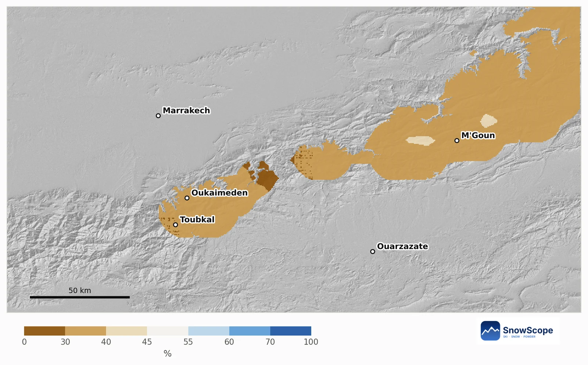
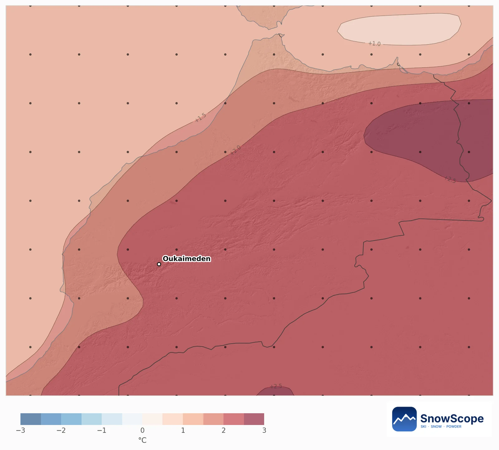
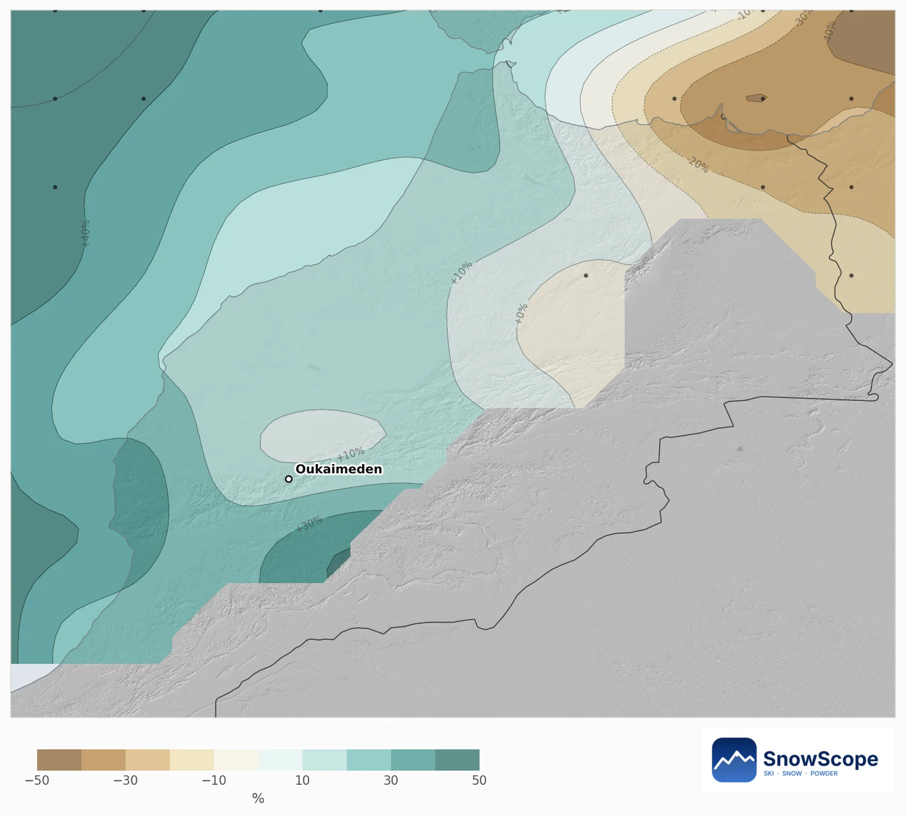
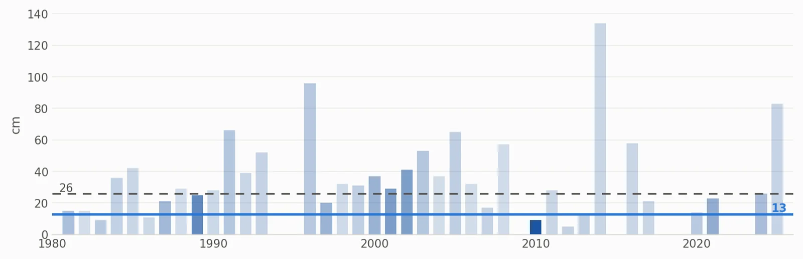

Oukaimeden a dicembre 2026: un mese caldo in arrivo, probabilità di neve sotto la norma
Oukaimeden è ancora senza neve: i 6 cm caduti in cima (3260 m) la settimana scorsa si sono sciolti, e i prossimi sette giorni sembrano asciutti. Per dicembre la previsione stagionale è nettamente calda sull'Alto Atlante, e basta per spingere le probabilità di neve sotto la norma.
Le previsioni neve in tempo reale per Oukaimeden nell'app SnowScopeAltezza neve, allerte powder e mappa 3D, gratis.
La neve oggi
La mappa mostra 0 cm alla base (2600 m), a metà montagna (2930 m) e in cima. Solo l'1 % dei 60 km intorno a Oukaimeden è bianco: invece di una mappa della neve vuota mostriamo il rilievo, il Toubkal e le creste alte dove di solito compare la prima neve duratura.
Probabilità più basse quasi ovunque
La nostra mappa confronta ogni zona di montagna dell'Alto Atlante di circa 10 km con i suoi dicembre passati. Il 95 % della montagna tende a meno neve e nessuna zona a più neve. La probabilità di più neve fresca di un dicembre abituale va dal 29 % al 43 % nella catena.
In alto a Oukaimeden, verso 3200 m, un dicembre abituale porta 41 cm di neve fresca e lascia 26 cm al suolo il 31 dicembre. La tendenza di quest'anno è di 37 cm di neve fresca e 13 cm il 31 dicembre, molto probabilmente tra 0 e 29 cm. La probabilità di più neve del solito il 31 dicembre è solo del 26 %.

Cosa dice la previsione europea
Le 51 corse del sistema stagionale del centro meteo europeo sono quasi unanimi: il 94 % rende dicembre più caldo del solito, in media di 2,2 °C sulla zona. Per le precipitazioni le corse sono divise: il 51 % è più umido, e la media è l'11 % sopra un dicembre abituale di soli 33 mm, spinta in alto da poche corse molto umide.
Nell'Atlante questo conta molto. A dicembre le perturbazioni sono poche, e con aria più calda una parte maggiore di ogni perturbazione cade come pioggia sui pendii bassi, e la neve fonde più in fretta sotto il sole forte. Qui la neve segue prima di tutto le precipitazioni (correlazione 0,91), ma il caldo ne toglie una parte.


I dicembre passati simili a questo
I dicembre con il tempo più simile a questa previsione sono il 2010, il 2023 e il 1989. Una sola grande perturbazione può ancora cambiare tutto nell'Atlante: la tendenza inclina le probabilità, non è un verdetto secco.
Seguite la previsione a 7 giorni: quando arriva una perturbazione atlantica, la cima di Oukaimeden è il primo posto a ricevere neve.

Consigli per sciatori
- Non programmate una giornata di sci a inizio dicembre senza controllare la previsione a 7 giorni.
- Dopo una perturbazione i pendii più alti tengono la neve più a lungo; in basso fonde in pochi giorni se il mese è caldo.
- Per l'escursionismo i sentieri alti potrebbero restare quasi senza neve; controllate le condizioni prima di salire sopra i 3000 m.
Riferimenti e crediti
- ECMWF SEAS5 seasonal forecasts, Copernicus Climate Change Service (C3S) cds.climate.copernicus.eu/datasets/seasonal-postprocessed-single-levels
- ERA5 monthly averaged data, Copernicus Climate Change Service (C3S) cds.climate.copernicus.eu/datasets/reanalysis-era5-single-levels-monthly-means
Su questi numeri
Metodo. Temperatura e precipitazioni: la previsione stagionale del centro meteo europeo (ECMWF SEAS5, 51 corse partite il 1° novembre 2026, anomalie rispetto alle sue riprevisioni 1993-2016, griglia di circa 100 km). Neve: per ogni cella di montagna di circa 10 km usiamo il nostro modello del passato (46 inverni, altezza della neve corretta per la quota) e il tempo di ogni dicembre dal 1981 al 2025 (ERA5); i dicembre passati con temperatura e precipitazioni simili a ciascuna corsa contano di più, e la loro neve dà le probabilità. Neve di oggi: la mappa della neve SnowScope (500 m). Una tendenza mensile sposta solo le probabilità: non prevede una tempesta né una data.
Cita questo articolo
Per ricerca, didattica o stampa: numeri e grafici sono liberamente riutilizzabili con licenza CC BY 4.0 citando così.
SnowScope (2026), Oukaimeden a dicembre 2026: un mese caldo in arrivo, probabilità di neve sotto la norma, https://snowscope.app/blog/it/2026/11/oukaimeden-december-2026-snow-outlook.html, consultato il 2026-11-10
SnowScope (Atlas Labs). (2026, November 10). Oukaimeden a dicembre 2026: un mese caldo in arrivo, probabilità di neve sotto la norma. SnowScope snow reports. https://snowscope.app/blog/it/2026/11/oukaimeden-december-2026-snow-outlook.html
BibTeX
@misc{snowscope2026oukaimedendecember2026sn,
author = {{SnowScope (Atlas Labs)}},
title = {Oukaimeden a dicembre 2026: un mese caldo in arrivo, probabilità di neve sotto la norma},
year = {2026},
month = nov,
howpublished = {\url{https://snowscope.app/blog/it/2026/11/oukaimeden-december-2026-snow-outlook.html}},
note = {Published 2026-11-10 09:30 UTC; accessed 2026-11-10}
}· CC BY 4.0 · Metodi, dati e strumenti →
Segui Oukaimeden
Gratis: un messaggio quando arriva la neve e il meteo ogni mattina.
Altri bollettini neve

Circa 65 mm sul Toubkal entro il 12 novembre, ma lo zero termico resta vicino a 4.000 m: pioggia a Oukaïmeden e nelle valli, neve solo in cima.

Le località sciistiche dell'Atlante oggi non hanno neve sulle piste. Il nostro modello trova neve solo sulle vette più alte: circa 80 km² di …

Un taccuino pratico su Oukaïmeden, nell'Alto Atlante: quando arriva di solito la neve, quanta, quali pendii scegliere e come arrivare da Marrakech.